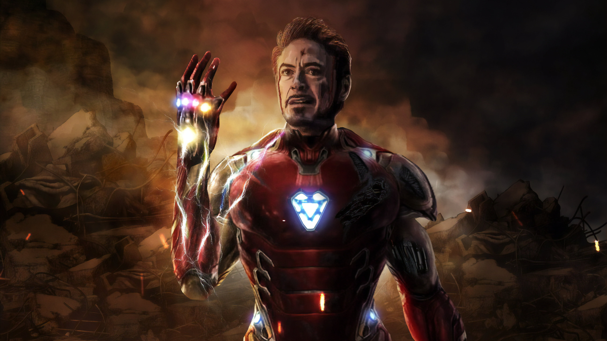

Iron Man
Iron Man, also known as Tony Stark, is a founding member of the Avengers and one of Marvel's most iconic characters. A brilliant inventor, billionaire, and playboy, Stark built his first Iron Man suit to escape captivity and has since used his technology to protect the world as a superhero.
Real Name: Tony Stark
First Appearance: Tales of Suspense #39 (1963)
Origin
Tony Stark, a genius inventor and industrialist, inherited Stark Industries from his father. After being kidnapped by terrorists, he created the first Iron Man suit to escape captivity. Upon his return, he refined the suit and vowed to protect the world, becoming Iron Man.
Abilities and Suit Features
- Powered Armor: Equipped with advanced weapons, flight capabilities, and life-support systems.
- Artificial Intelligence: J.A.R.V.I.S. and later F.R.I.D.A.Y. assist Tony in controlling the suit.
- Weaponry: Repulsor blasts, missiles, lasers, and energy shields.
- Flight: Supersonic flight with built-in propulsion systems.
- Durability: Provides resistance to most attacks.
- Tech Integration: Integrates advanced technologies like nanotech in later versions.
Key Storylines
- Civil War: Tony supports superhero regulation, leading to conflict with Captain America.
- Armor Wars: Tony fights to destroy unauthorized versions of his armor.
- Infinity War/Endgame: Tony plays a pivotal role in the battle against Thanos, sacrificing himself to defeat him.
Personal Life
- Love Interest: Pepper Potts, his longtime assistant and CEO of Stark Industries.
- Mentor Role: Acts as a mentor to Peter Parker (Spider-Man).
- Health Issues: His heart is damaged by shrapnel, kept at bay by the arc reactor in his chest.
Fun Facts
- First Appearance: Tales of Suspense #39 (1963), created by Stan Lee, Larry Lieber, Don Heck, and Jack Kirby.
- Alter Egos: Used different identities, including the Iron Patriot armor.
- Cultural Impact: Iron Man was brought to global fame by Robert Downey Jr. in 2008, kickstarting the MCU.